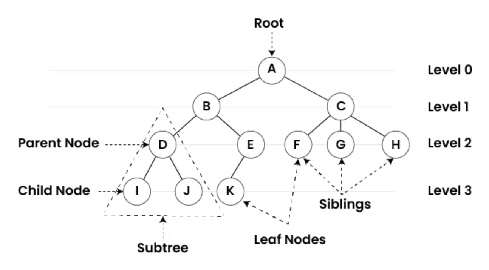

Trees
A tree is a hierarchical data structure made of nodes connected by edges. The top node is called the root, and nodes below it are children. Trees are great for representing relationships like folders on a computer or organizational charts.

Important terms
- Root: the starting node
- Leaf: a node with no children
- Height: how many levels the tree has
Binary Search Trees (BST) (basic idea)
In a BST, left child values are smaller than the parent, and right child values are larger. This ordering can make searching efficient when the tree stays balanced.
Typical efficiency: search can be around O(log n) in balanced trees, but can become O(n) if unbalanced.
Tree Traversal Methods
- Inorder: Left → Root → Right
- Preorder: Root → Left → Right
- Postorder: Left → Right → Root
Balanced Trees
Balanced trees (like AVL or Red-Black trees) maintain a structure that keeps their height small, ensuring faster searching.